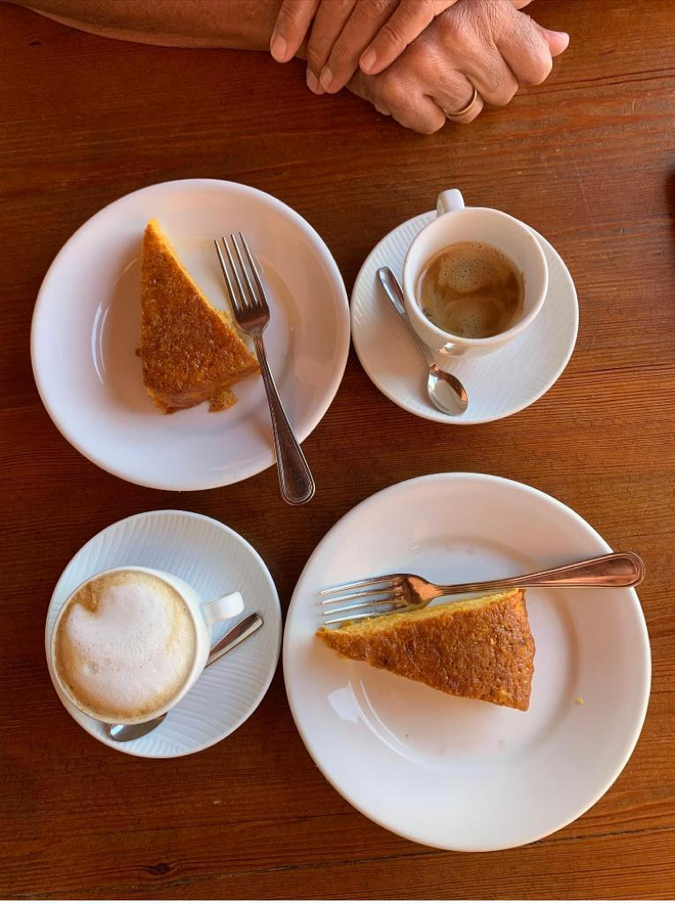

Fausta's Orange Cake

Fausta is the cook on the camping I've went to since I was a little child. I have very fond memories of her being the sweetest lady and giving so much love to the food she cooks and the people that visit the camping. She has a lot of signature dishes, which one of them is this one. An insanely delicous cake made with orange and Grand Manier. She learned this dish from her aunt, and I've learned this dish from my mother, who've learned it from my grandfather.
Ingredients
For the cake
- 6 oranges
- 4 eggs
- 400 grams of sugar
- 300 grams of flour
- 100 grams of butter
- 2 teaspoons baking powder
- pinch of salt
For the juicinesssweetness
- 50 grams of sugar
- juice of 6 oranges
- 1 glass of Grand Manier
How to make this
-
Melt butter in a pan. Let cool to a comfortable temperature. Preheat oven to 180 degrees.
Grate the zest of the orange, not the white.
- Put the eggs, 400 grams of sugar, orange grate, stir together by hand with two forks. Add a little salt and melted butter. Slowly add flour and baking powder, mixing each time until new paste is formed.
- Cover the spring form with baking paper. Pour in mixture. Bake in the oven for +/- 40 minutes.
- Squeeze the oranges. Heat together with liqueur and 50 grams of sugar (do not boil).
- Remove the cake from the spring form and turn it upside down. Cover the bottom spoon by spoon with orange solution. Turn over and pour the rest over the top.
- Serve at room temprature.
Back